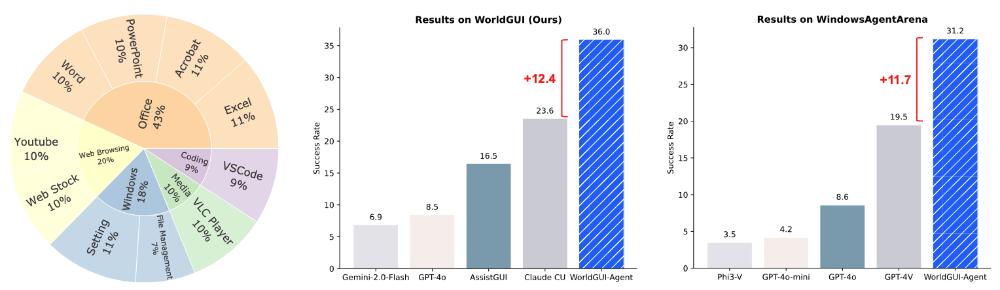
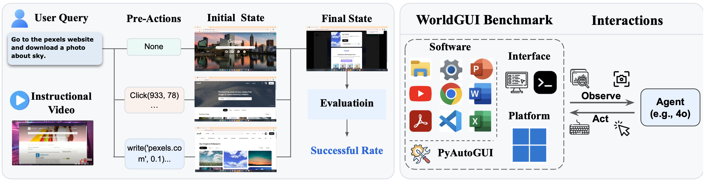
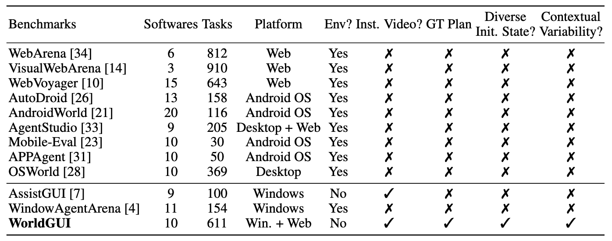
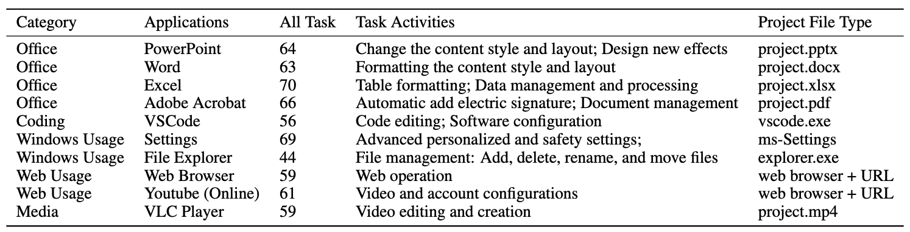

What's new with WorldGUI Benchmark?
TL;DR: WorldGUI extends the evaluation of GUIs from a static to a dynamic testing process, which is more relevant for reflecting the complex and dynamic nature of GUI environments.

WorldGUI is an early work to stimulate dynamism in the real user-computer scenarios.
As illustrated in above figure, most GUI benchmarks focus on initial and final states, measuring success rates but overlooking the changing initial conditions present in real GUI scenarios.
These benchmarks often ignore situations where:
(1) The software interface is not in its default state.
(2) The agent might get user queries at any time.
(3) Differences in agent robustness, where agents with the same low success rate (e.g. 2%) may vary
in their ability to self-verify or self-correct, but these abilities are not measured in a static setting.
Overview
Software taxonomy of WorldGUI and the performance comparison of GUI agents. The left shows 5 main groups and 10 software in our WorldGUI. The right shows that WorldGUI-Agent surpasses previous SOTA GUI agents significantly.
WorldGUI: The left shows that for each task, WorldGUI provides a user query, instructional video, and pre-actions. The pre-actions lead to different initial states. The key characteristic of our WorldGUI is the various initial states of the same task to stimulate the real-world testing process. The right shows the software included in our benchmark and the interactions about testing the agents in our GUI environment.
WorldGUI-Agent Framework

WorldGUI-Agent includes five proposed components: Planner, Planner-Critic, Step-Check, Actor, and Actor-Critic. The Planner module receives the user query and an instructional video as input and generates an initial plan for the Planner-Critic process. This plan is then refined and executed step by step. Before each step is passed to the Actor module, it undergoes a Step-Check. After the Actor produces an action, the Actor-Critic module iteratively verifies the completion of the action and makes corrections if needed.
Benchmark Comparison
Table 1: WorldGUI is a unique benchmark that has the various states for each task to stimulate the real-world agent-computer interactions.
Data Statistic
Table 2: This table shows all tasks, task activities, and project file of the desktop applications used in WorldGUI.
An Successful Execution Example

An Example of Augmented Data Construction

Visualization of Parser Results

An Example of Planner-Ciritc

An Example of Step-Check

An Example of Actor-Ciritc

Erorr Cases Visualization


Citation
@misc{zhao2025worldguiinteractivebenchmarkdesktop,
title={WorldGUI: An Interactive Benchmark for Desktop GUI Automation from Any Starting Point},
author={Henry Hengyuan Zhao and Kaiming Yang and Wendi Yu and Difei Gao and Mike Zheng Shou},
year={2025},
eprint={2502.08047},
archivePrefix={arXiv},
primaryClass={cs.AI},
url={https://arxiv.org/abs/2502.08047},
}
Acknowledge: Thanks to Carlos & John for this webpage template. Also thanks to the SWE-bench team and their benchmark https://www.swebench.com/multimodal.html.
Template Usage: If you would like to use this website template for your own leaderboard, please send Carlos & John an email requesting permission. If granted, please make sure to acknowledge the SWE-bench team and link to this leaderboard on the home page of the website.